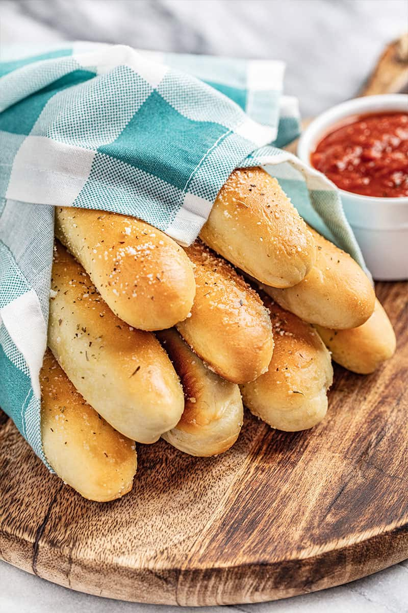

Homemade Breadsticks

Description
The perfect pairing with pasta or pizza.
Ingredients
Breadstick Dough
- 1 cup warm water
- 1 Tbsp instant dry yeast
- 2 Tbsp granulated sugar
- 1 Tbsp table salt
- 3 Tbsp olive oil
- 2 1/2 cups all-purpose flour
Topping
- 2Tbsp melted butter
- 1/4 tsp table salt
- 1/4 tsp garlic powder
- 1 Tbsp grated parmesan cheese
- 1 tsp italian seasoning
Steps
- In the bowl of a stand mixer, combine warm water, yeast, sugar, salt, and olive oil.
- Add in 2 cups of flour. Using a dough hook, turn the mixer on to a low speed. Once the flour starts to incorporate into the dough, increase the speed to a medium range. Slowly add the remaining 1/2 cup of flour until the dough pulls away from the sides of the bowl. The dough mixture should be slightly sticky and soft, but shouldn't stick to your hands. Add more or less flour until the dough reaches the desired consistency.
- Transfer the dough to a lightly greased mixing bowl. Cover with a towel and let rise 30 minutes.
- Lightly grease a baking sheet or line with parchment paper. Punch dough down and divide into 12 equal pieces. Roll each piece into a 9 to 10-inch long rope or snake. Place on the prepared baking sheet and let rise for 20 minutes while the oven preheats.
- Preheat oven to 400 degrees F. Bake breadsticks for 16 to 18 minutes, until golden brown on top.
- While the breadsticks are baking, whisk together the melted butter, salt, and garlic powder in a small bowl. Brush on top of breadsticks immediately after baking. Sprinkle with parmesan cheese or dried herbs as desired.